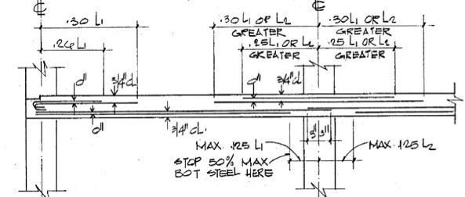

迈阿密倒塌建筑的板柱节点抗倒塌性能分析和中美设计标准对比
编者荐语：
以下文章来源于北工大结构抗倒塌课题组 ，作者杨智，刁梦竹

建筑结构抗倒塌课题组，主要从事工程结构和材料在地震、冲击、火灾等灾害荷载下的抗倒塌和防护性能研究工作。
本文相关文章：

声明：本分析是根据收集到的图纸和数据，结合课题组在板柱结构连续倒塌模拟方法方面的工作，选取原型结构的一个典型节点，对其全过程受力性能开展了初步的分析，从节点构造角度提供一些思考，不作为任何事件分析的基础和依据。
1. 背景
近日，在美国佛罗里达州一栋12层板柱结构住宅楼突然发生局部连续倒塌。目前事故已造成至少9人死亡，156人下落不明。这座位于瑟夫赛德（Surfside）的住宅大厦于1981年竣工。当它倒塌时，当局正在根据城市安全法规对已有40年历史的建筑进行重新认证。
钢筋混凝土板柱结构作为一种常见的结构形式在实际工程当中得到广泛应用。由于板柱节点易发生冲切破坏，常被视为该结构体系最为薄弱且极其重要的一个环节。特别是个别节点失效引起的内力重分布，可能导致更大范围的破坏甚至引发整体结构的连续倒塌。由于灾害事故发生概率低而引起的连续倒塌后果严重，工程结构抗连续倒塌采用一种允许初始局部破坏而控制倒塌破坏传播的设计哲学，从而经济有效地提升结构的性能。对板柱结构这就意味着允许个别节点发生冲剪破坏，而系统仍能吸收和跨越初始局部破坏，不发生严重的后果。节点在冲剪破坏后依然能够通过穿柱钢筋受拉提供较大的承载力，甚至通过合理的构造使得冲剪破坏后的承载力大于冲剪承载力，充分利用节点冲剪全过程的受力能够更有效的实现抗连续倒塌设计目标。
钢筋构造是影响节点冲剪破坏后的承载和变形能力的首要因素。各国规范对钢筋构造的要求随着时间推移是逐渐变化的，加上各国在工程实践和灾害事故中的经验各不相同，目前各国规范对板柱节点钢筋构造的要求也不尽相同。这在一定程度上造成各国规范设计的节点具有不同的抗倒塌性能。
本次分析以事故原型的板柱节点为基础，保持其材料等级、几何尺寸和配筋量不变，采用中国规范的钢筋构造要求对其进行改造。采用精细有限元方法对两个节点的冲剪受力全过程进行分析，对比两种钢筋构造对节点受力性能的影响。
2. 楼板钢筋构造
老旧平板结构的设计与现代结构设计之间有着巨大的差别。本次事故中的结构采用美国1981年以前的ACI 318规范进行设计，其柱上板带的钢筋构造如图1所示。可以看到这些钢筋具有以下两个特点：1，板顶负弯矩钢筋（flexural reinforcement）不贯通；2，板底整体性钢筋（integrity reinforcement）有一半在节点外切断，剩下的一半在节点内通过搭接连接。在搭接长度方面，图纸定义搭接长度为149 mm。我们前期的研究表明，节点冲剪后的受力性能主要取决于穿柱的贯通钢筋。原型节点在节点冲剪破坏后的受拉中，仅板底的一半整体钢筋通过搭接连接传递拉力，这显然是不够的。连续倒塌下传递的拉力最大可以达到楼面荷载的五倍（按倒塌规范要求的极限挠度等于五分之一跨度计算），目前搭接连接的检验主要是抗震作用下传递的拉力，和前者比不在一个量级。自1989年以来，ACI 318规范加入了结构完整性要求，板底整体性钢筋需贯穿不得截断，且要求不得少于2根板底整体性钢筋穿过板柱节点。

图1 某12层公寓建筑图纸-柱上板带
目前中国规范对板柱节点的钢筋构造要求更加严格，其中，板顶负弯矩钢筋中每个方向贯通钢筋配筋率不少于0.1%，板底整体性钢筋全部贯通，其中最多50%在轴线处采用搭接连接、焊接或套筒连接等，其他钢筋在此截面处需保持连续。在搭接长度方面，根据中国规范验算得到搭接长度为530mm，远大于事故结构。可以看到，上述这些钢筋在冲剪后的大变形下都可以提供有效的拉力。此外，中国规范对平板还建议采用暗梁构造，要求柱上板带内至少1/2的板顶负弯矩钢筋集中到暗梁内，集中在暗梁内的板底整体性钢筋不少于前者的1/2，暗梁内的纵筋用箍筋约束。这意味着穿柱贯通钢筋的数量大幅提升，而我们前期的试验表明，暗梁箍筋能够有效约束非穿柱钢筋参与受力，这又进一步提升了冲剪后传递拉力的钢筋数量。
1）整体性钢筋过少，低于规范要求。
2）板柱结构跨厚比超出规范规定。
3）钢筋连接不符合规范要求。
4）缺乏暗梁等构造措施。
3. 数值模拟验证
利用LS-DYNA有限元软件对节点区域内半跨板进行了1:1全尺度建模和计算，原型结构的模型见图2，建模方法参考文末参考论文[1-4]。模型边界采用弹簧单元来模拟侧向约束，刚度取值在前期工作中已经标定[4]。

(a)混凝土

(b)钢筋
图2 板柱节点半跨模型(原型节点)
按中国规范构造设计的节点的钢筋模型如图3所示。

图3 板柱节点半跨模型钢筋布置(中国规范设计)
不同节点的力-位移曲线对比如图4所示，主要差别包括：
按照中国规范设计的节点存在板底部分切断钢筋变为通长以及暗梁中箍筋的约束作用，抗冲剪承载力会比倒塌建筑提高6%。
按照中国规范设计的节点，由于被暗梁约束的贯通钢筋存在，使得冲剪后的大变形阶段的承载力是倒塌建筑的2倍以上。

图4 不同节点力-位移曲线对比
由图5冲剪后破坏模式也可看出，暗梁在提高结构整体性的方面能够发挥很大的作用，继而可以提高节点悬挂机制的承载力峰值。

图5 板柱节点半跨模型冲剪后破坏模式(中规)

图6 美国倒塌建筑节点冲剪破坏模拟

在搭接方面，旧版美国规范的搭接长度明显不足，节点冲剪后进入受拉时发生了明显的滑移，如图8。而中国规范的搭接长度是其3倍多，未发现明显滑移，这也是影响搭接连接钢筋发挥受拉的关键因素。

图8 倒塌建筑节点模型钢筋滑移
需要注意的是，原型结构的楼板跨度（6660 mm）和厚度（200 mm）比较大，楼板的整体变形较大，削弱了对节点的约束，也造成了冲剪破坏后节点承载力发挥有限的后果。我们前期的试验和模拟表明，在较小跨高比的楼板中采用暗梁构造后，冲剪后的承载力可以接近甚至超过冲剪承载力。这也是原型结构可能存在的潜在问题。
参考文献
[1] Post-punching mechanisms of slab-column joints under upward and downward punching actions, Magazine of Concrete Research, 2021, 73(6): 302-314. DOI: 10.1680/jmacr.19.00217
[2] Simulation of punching and post-punching shear behaviors of RC slab–column connections, Magazine of Concrete Research, 2020, March 06, DOI: 10.1680/jmacr.19.00465
[3] Enhancing post-punching performance of flat plate-column joints by different reinforcement configurations.” Journal of Structural Engineering-ASCE, 43. DOI: https://doi.org/10.1016/j.jobe.2021.102855.
[4] Mengzhu Diao. Punching and post-punching shear behaviour of interior RC slab-column joints with in-plane constraints. Ph.D. thesis, Griffith University, 2021.
---End---
相关研究
专著
人工智能与机器学习
城市灾害模拟与韧性城市
高性能结构与防倒塌
新论文：抗震&防连续倒塌：一种新型构造措施
长按识别二维码，关注我们的科研动态